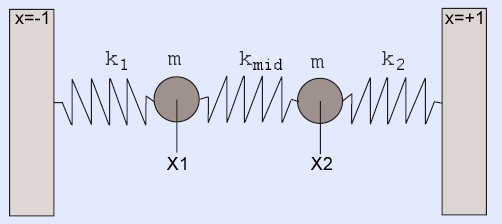
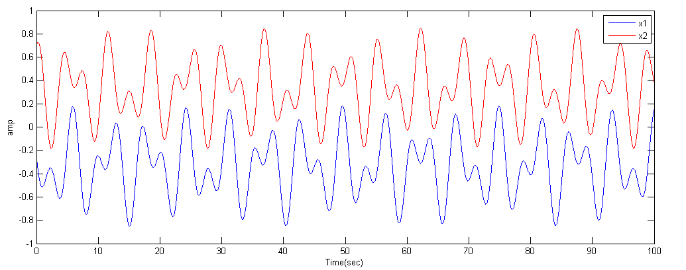
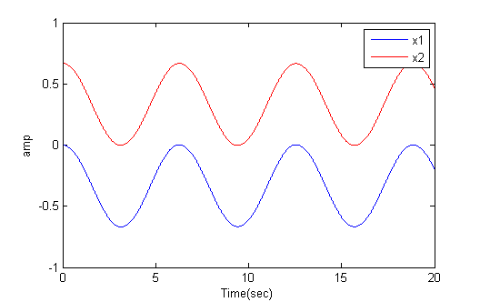
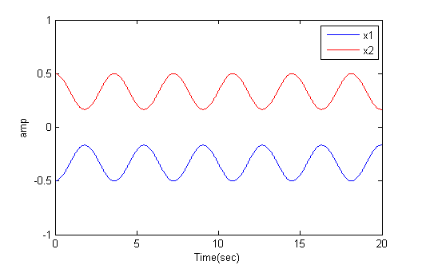
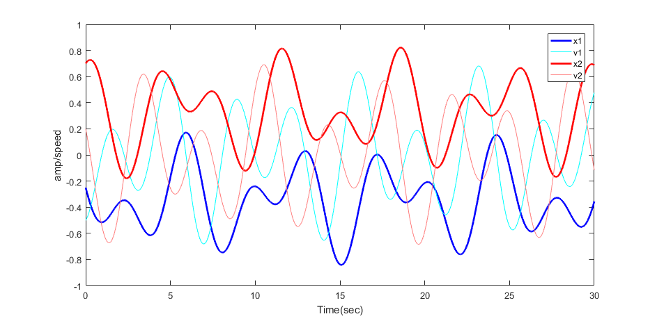

ECE 5760: Laboratory 2
Hardware ODE solver with HPS control.
Introduction.
For this exercise, you will simulate an analog system using a Digital Differential Analyzer (DDA) and control the function of the circuit with the HPS. The positions of the two particles will be plotted as a function of time on the VGA display. You can consider the DDA as a special purpose, reconfigurable, coprocessor controlled by the HPS. The DDA you write will be a bus-slave of the HPS, and bus-master of the VGA.
Procedure:
Read the DDA page. After reading the page down through Second order system, the integrator code that you want to use is taken from Second order system with modularized integrator and NiosII cpu at the end of the page. Note that you will NOT be using a NiosII controller as shown in the example, but rather the HPS. All you need to pull from the example is this code snippet.
The physical system you will simulate is the coupled, spring-mass system shown below (video)
The image is modified from a paper by Alex Gagen and Sean Larson.

The differential equations for this system are:
m(d2x1/dt2) + k1(x1) − kmid(x2 − x1) + D1(dx1/dt) = 0
m(d2x2/dt2) - k2(x2) + kmid(x2 − x1) + D2(dx2/dt) = 0
The k's are spring constants, m the mass, and D's the damping coefficients. The outputs are x1 and x2 which will depend on position and velocity initial condtions, as well as the equation constants.
A matlab code and function provides a high accuracy reference solution, to which you may compare your solutions (but see also code below). The image below is a typical output from the matlab program.
Note that the matlab code includes cubic force terms for the springs:
spring_force1 = k1 * ((x(1)-left_wall) + k13*(x(1)-left_wall)^3)
You will have to add one such term (k13) in the assignment below.

But in general the solutions are linear combinations of symmetric and antisymmetric solutions. The anti-symmetric solution corresponds to masses moving in exactly the same directions at all times, so that the center spring stays at its rest length, R. If the two outer springs have equal k and rest length L, then at rest, k*L=kmid*R and 2*L+R=2. For example, if kmid=k then the distance betweent the two masses can stay at separation 0.67 indefinitely (first image below). If the two masses are started at symmetric positions (relative to zero), then they move in opposite directions at all times (second image).


-- Development process for this exercise
- Start by simulating in Matlab!
The previous matlab program uses the high performance ode45 solver. On the FPGA you are going to be using simple Euler integration. This matlab program is coded to use Euler integration so that you can directly compare the the FPGA solution. The undamped solution is unstable, so a little damping is added. Make sure that for the constants and initial conditions that you choose that NO state variable goes outside the range
(+/-1). In the image below, positions and velocities stay in range.

- Next simulate your verilog in Modelsim until you get the same result as you did in matlab. You will need to write a testbench which sets the same constants and initial conditions as in the matlab code (see below). You can also estimate how to set up the VGA drawing state machine from the simulation. For example, how many compute cycles should there be per plotted point.
- When the compute module works, and you know the plot interval, you are ready to write the VGA bus-master state machine. Hard-code (or switch set) constants so that you do not need the HPS input, Use a pushbutton to reset the computation and display the one fixed solution. Conversion from floating constants to 2:16 fixed point Verilog format is given below as a C snippet, where b is a float and C prints the Verilog 2:16 constant
if b>=0
printf("(18'sd%d), \n", (int)(2^16*b) ) ;
else
printf("(-18'sd%d), \n", (int)(-2^16*b) );
end
- Simulate the solver with the VGA bus-master state machine. The output of the state machine will be VGA addresses (x-y position) and colors. The testbench code can generate the Vsync and Hsync signals and bus ACK. Do not put your code on the FPGA until the simulation works.
- Connect your solver and VGA state machine to an EBAB interface and test on the FPGA.
- When the hard-coded version plots with a VGA bus-master, build the bus-slaves necessary to control reset function and set constants from the HPS, then start on the command software for console control. I suggest a simple command interpreter to enter the three spring constants, four initial conditions, start/stop, cubic enable, and reset. Remember that a parallel I/O port (PIO) which provides data from the HPS to the FPGA is an output! To get the PIO datasheet, right-click the module name and in the pop-up menu, select details>datasheet. Some other modules require that you follow the path details>open_component_folder to get the datasheet.
--FPGA and HPS:
- External Bus to Avalon Bridge (external master)
- PIO bus-slave (see also Qsys design page)
- Using external buses
Example from 2016 by Tahmid Mahbub, Manish Patel, Matt Filipek
Assignment
- Build a DDA which simulates a coupled spring-mass system as described above.
-- The DDA will need to be connected to one or more Avalon Bus-Slaves for control by the HPS (see below)
-- Choose the spring constants, masses, and time step so that the natural frequencies of the system are around 500 Hz.
-- Scale the amplitude so that the integrators stay in range (+/-1).
-- Scale time so that the spring constants
stay in range (+/-1).
-- You can set the mass to a constant m=1 .
- Monitor the two position variables using a VGA output of x1 and x2 versus time.
-- Build a Avalon BusMaster to write the VGA screen plot of the two positions generated by the DDA.
(The output of the DDA is not feed back to the HPS)
--
The display should look much like the matlab plot above.
-- Scale the display so that the amplitude range takes up about one half of the VGA vertical resolution.
-- The horiziontal VGA coordinate should be in a small multiple of the time step, so as to show a few cycles.
-- The display should be erased when a new simulation starts. It should freeze
when the simulation stops.
- Use a HPS C program to allow an operator to use a serial console to:
-- Set the four initial conditions of the simulation.
-- Set the three linear spring constants.
-- Start/Stop the simulation.
-- Turn on/off a cubic spring term for spring 1 scaled so thta the cubic force is about the same as the linear term.
Be prepared to demo your design to your TA in lab. You will be expected to show:
-- Set arbitrrary initial conditions and all three spring constants
--
Symmetric and antisymmetric modes with and without the cubic spring term.
Your written lab report should include:
- Mathematical considerations (type of integrator, error expected/measured, approximations)
- Video screen shots of the VGA -- video emailed to TAs
- How you implemented the DDA circuits.
- A heavily commented listing of your Verilog design and GCC code.
Copyright Cornell University
March 7, 2017
{kind=link}